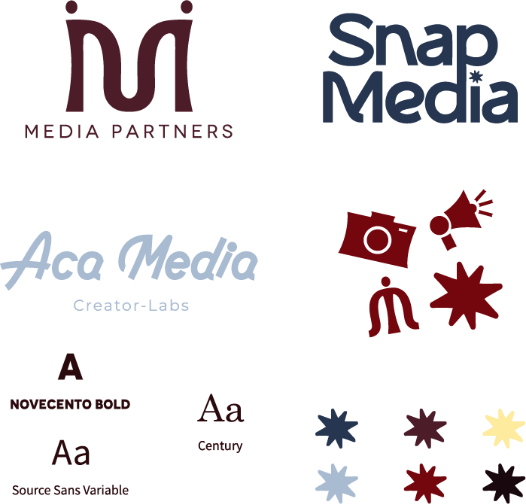

Snacky es una marca de snacks saludables para perros especializada en gomitas de colágeno para la cual desarrollé el naming, branding integral y su lenguaje visual. Se diseñó una identidad juguetona, divertida y amigable mediante una paleta de colores alegre y formas redondeadas que permiten diferenciar fácilmente su variedad de productos y conectar con los dueños de mascotas.
SOLUCIÓN GRÁFICA
Se desarrolló el sistema visual base según los valores de la marca, buscando una apariencia amigable, divertida y cercana. Este incluye una paleta de colores alegre y vibrante para diferenciar la variedad de productos, un sistema de 3 tipografías (la principal intervenida con una huella, una para subtítulos y otra para bloques de texto), y una iconografía propia con huellas de perro, gato y gomitas pensada para empaques y prendas.


MEDIA PARTNERS ES Una agencia de marketing y gestión de redes sociales para la cual se realizó un rediseño total de marca, además de crear el branding de sus dos submarcas (SnapMedia para producción audiovisual y ACAMEDIA para gestión de microinfluencers). Se construyó un universo visual elegante, juvenil y cool que elimina la percepción de agencia junior, unificando todo el ecosistema mediante un sistema tipográfico adaptable, una paleta corporativa y rotativa, y un lenguaje iconográfico compartido.
SOLUCIÓN GRÁFICA
Se diseñó un universo gráfico dinámico para unificar a la marca madre con sus submarcas (SnapMedia y ACAMEDIA), definiendo una paleta de color corporativa y rotativa que proyecta una imagen elegante, juvenil y cool. El sistema incluye una arquitectura tipográfica flexible (con fuentes exclusivas para Media Partners y compartidas para las submarcas) junto a un lenguaje de iconografía propio, creado para adaptarse fácilmente a formatos digitales, producciones de video y aplicaciones de marca.

.svg)